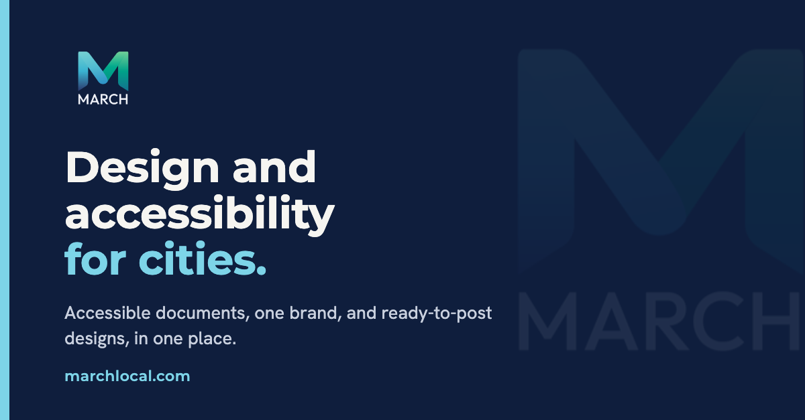
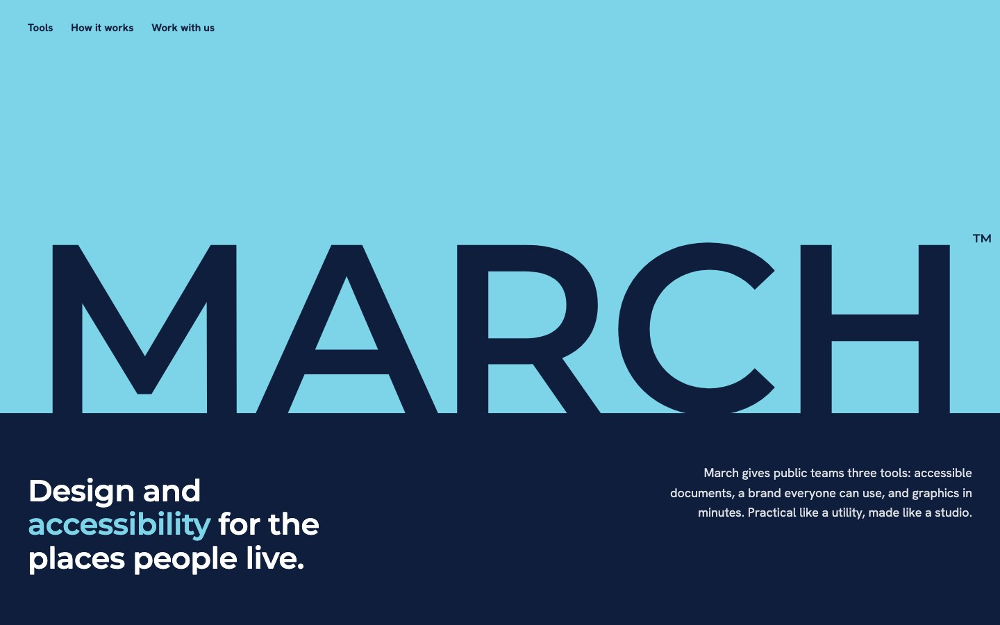

Scene 05 · March2026
A brand for public work
March launch film, 30 seconds, music only. A written description of everything it shows follows in the text below.
March launch film · 0:30
The brief
March gives public teams three tools: accessible documents, a brand everyone can use, and graphics in minutes. Public work shouldn't look like paperwork. The brand had to feel "practical like a utility, made like a studio," and be readable by everyone.
My role
I led the brand identity and creative direction: the logo and M mark, the palette and type, the marchlocal.com website, the 30-second launch film and the brand guide.
The decisions
- One letter, one move. An "M" mark and a calm night-blue and signal-cyan palette, with every color pair checked for contrast before it was approved.
- Show, don't claim. The 30-second launch film walks through the three tools in order, with music only and every on-screen claim also on the page.
- Accessible by design. The website, film captions and documents were built for the same readers the product serves.
What the film shows
- The three tools, one after another: Documents, Brand, Design. The M of March appears.
- A blurry page asks "Unreadable?" One press of "Fix it" and it is tagged: a heading, paragraphs and a table, with a check mark. "One click."
- The March colors and logo fill the screen: "Always on brand."
- Graphics in every size: a "Run the river" post on a phone and an "Extreme heat: cooling centers open" alert. "Every format."
- The end card: "MARCH. Made for everyone." and marchlocal.com.
Outcome
One identity carried across every touchpoint: logo and mark, a five-color palette, two typefaces, the marchlocal.com website, the launch film and the brand guide. The tagline: "Made for everyone."
- Role
- Brand identity and creative direction
- Organization
- March
- Website
- marchlocal.com
- Years
- 2026
- Delivered
- Identity, website, 30-second launch film, brand guide
Night#0F1E3D
Signal#7DD4E8
Indigo#2C3A6E
Violet#5C4F8E
Paper#F6F5F1

